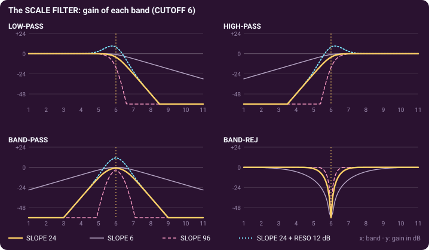
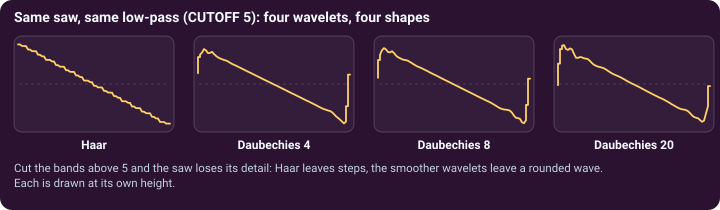
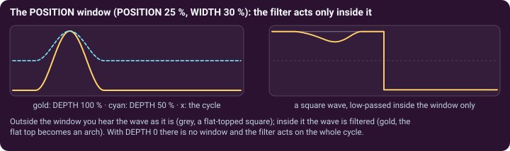

Subtractive synthesis with wavelets · page 2 of 3 · oscillators A1 and A2
The wavelet filter and the window
Subtracting means turning bands down. The WAVELET FILTER does it by size, the WINDOW does it by place.
The wavelet filter works on bands, not on hertz
CUTOFF is a band number, from 0 to 12: a low-pass at 5 keeps bands 1 to 5 and turns the finer ones down. Each band is an octave of the note's harmonics, so the filter follows the note: with KEY TRK at 100 % (the default) the same bands are kept whatever key you play. At 0 % the cutoff stays at a fixed pitch, as in a classic filter, and high notes lose their top. The knob reads the highest harmonic the filter lets through at C4, with its frequency (for example H8 · 2.1 kHz); you can type a harmonic (H8), a frequency (2 kHz) or a band number. The picture next to TYPE shows the gain of the 11 bands at C4, one bar per band (the last three, above 20 kHz at C4, in grey).

- TYPE: LOW-PASS keeps the large bands, HIGH-PASS the small ones, BAND-PASS a few bands around the cutoff, BAND-REJ removes a few and keeps the rest.
- SLOPE: how many dB each band beyond the cutoff loses, from 6 (gentle) to 96 (a wall). 24 is the default.
- PEAK (called RESONANCE before version 1.0.20): a bump of up to 24 dB, about one band wide, around the cutoff (not on BAND-REJ).
- ENV AMT: the MOD ENVELOPE moves the cutoff by up to ±11 bands. VEL AMT: the key velocity moves it by up to ±6 bands (positive: soft notes are darker).
Why the wavelet matters here
When bands are turned down, what is left depends on the atoms they are made of: the same saw through the same low-pass leaves steps with Haar and a rounded wave with the smooth wavelets.

The window: a filter in one part of the wave
Atoms have a place in the cycle, so the filter can act on one part of it. In the WINDOW card, AMOUNT (called DEPTH before version 1.0.20) says how much the window matters, POSITION puts it (0 to 100 % of the cycle), WIDTH sets its width. Inside the window you hear the filtered wave; outside, the wave as it is. AMOUNT at 0 turns the window off, and the filter acts on the whole cycle (the default): POSITION and WIDTH are greyed out then. The position is a place inside the wave, not a moment in the note: moving it with an LFO makes the tone sweep. Since the window mixes the filtered wave with the wave as it is, it is heard only when the filter takes something away.

Compared with a classic filter: the cutoff is a band of the wave, so it follows the note and needs no tuning; the WAVELET colours the result (seven filters in one); and the window filters one part of the cycle, which no classic filter can.
Try it. Load A · Wave Brass (ENV AMT +4: each note opens the cutoff by four bands) or A · Wave Riser (a BAND-PASS at CUTOFF 5, PEAK 14, swept by LFO 1). Then set AMOUNT to 100 % and move POSITION while you hold a note.